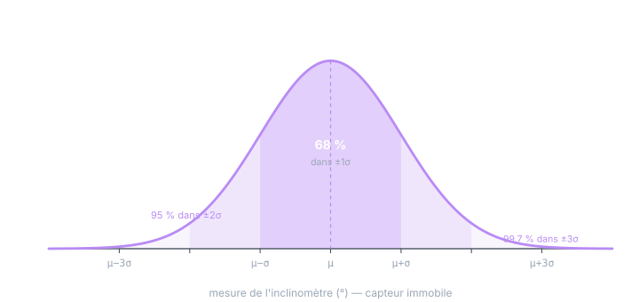

Chapitre 02
Décrire une variable : distribution, espérance, variance
Objectifs du chapitre
- Décrire une VA par sa distribution (loi) — discrète ou continue (densité).
- Comprendre l'espérance comme centre de gravité et sa propriété maîtresse : la linéarité.
- Comprendre la variance et l'écart-type — et leurs unités.
- Savoir lire les règles 68 / 95 / 99,7 et raisonner en ±kσ sur un capteur.
1. La distribution : la carte des possibles
Une VA est décrite par sa distribution (ou loi) : la répartition des chances entre les valeurs possibles. Pour une VA discrète (un dé, un compteur d'événements), on liste les probabilités : P(Z = 1) = 1/6, etc. — des nombres positifs qui somment à 1.
Nos capteurs vivent dans le continu : une lecture d'angle peut prendre n'importe quelle valeur réelle. La probabilité d'une valeur exacte y est nulle (P(Z = 5,000000…) = 0) — on décrit donc la loi par une densité de probabilité p(z) : une fonction dont l'aire sur un intervalle donne la probabilité d'y tomber.
Une densité n'est pas une probabilité : elle peut dépasser 1 (si la VA est très concentrée), et elle a une unité — l'inverse de celle de la variable (p(z) en 1/° pour un angle en degrés). Seules ses aires sont des probabilités, sans dimension. C'est le même piège que la densité spectrale du chapitre 7 : « densité » signifie toujours « quelque chose à intégrer ».
2. L'espérance : le centre de gravité
Résumer toute une distribution par quelques nombres — c'est le rôle des moments. Le premier est l'espérance E[Z], notée μ : la moyenne pondérée des valeurs possibles, chacune comptée avec sa chance.
Image mécanique : si la densité était une plaque de tôle, μ serait son centre de gravité. Interprétation fréquentielle (le pont avec le niveau réalisation du chapitre 1) : si l'on rejouait l'expérience un grand nombre de fois, la moyenne des réalisations s'approcherait de μ — c'est la loi des grands nombres, que le chapitre 8 rendra quantitative.
Sa propriété reine, utilisée sans arrêt dans tout le cours de Kalman : l'espérance est linéaire, sans aucune condition d'indépendance :
3. La variance : l'étalement
Deux capteurs peuvent avoir la même moyenne et des comportements très différents : l'un colle à μ, l'autre s'en écarte largement. Le deuxième moment mesure cet étalement : la variance est la moyenne des carrés des écarts au centre.
Pourquoi le carré et pas la valeur absolue ? Trois raisons pratiques : le carré pénalise davantage les grands écarts, il rend le calcul différentiable (indispensable pour minimiser — le MMSE du chapitre 9), et surtout il rend les variances additives pour des variables indépendantes (chapitre 4) — la propriété qui fait tenir tout l'édifice, du √N de la marche aléatoire au +Q du filtre.
Les unités. La variance porte l'unité au carré : deg², m², (m/s)². Seul l'écart-type σ partage l'unité de la variable — c'est lui qu'on lit comme un « ± », lui qu'on compare à une tolérance. Dire « le bruit est de 0,16 » sans préciser si c'est σ (0,16°) ou σ² (0,16 deg², soit σ = 0,4°) est l'erreur d'inattention la plus coûteuse du métier — un facteur arbitraire au carré dans R.
Sous transformation affine, l'écho de la linéarité — avec le carré qui apparaît :
4. Lire une loi en ±kσ
Pour la gaussienne — qu'on justifiera au chapitre 4 — la paire (μ, σ) dit tout, et trois chiffres suffisent à raisonner :

Cette règle est l'outil de terrain par excellence :
- Un inclinomètre de bruit σ = 0,4° : les lectures s'étalent typiquement sur ± 0,8° (2σ), et une excursion à ± 1,2° (3σ) reste normale — pas une panne.
- À l'inverse, une datasheet qui annonce « ± 1,2° crête-à-crête » décrit vraisemblablement ± 3σ, d'où σ ≈ 0,4° — la règle σ ≈ pk-pk/6 du chapitre 16 du cours Kalman.
- Une mesure à 5σ de ce qu'on attendait a une chance sur des millions d'être due au hasard modélisé : c'est un aberrant — le fondement du gating par NIS.
Remarquez le raisonnement : la loi (ensemble) vous dit à l'avance dans quel couloir les réalisations vont tomber. C'est exactement ce que fait le filtre de Kalman quand il annonce x̂ ± √P : il trace le couloir à ±1σ dans lequel la vraie valeur se trouve avec ~68 % de chances. Une bande d'incertitude est une règle 68–95–99,7 en marche.
5. Estimer μ et σ² depuis des mesures — l'aperçu
En pratique on ne connaît pas μ et σ² : on les estime à partir de réalisations — moyenne empirique, variance empirique (celle du chapitre 16 du cours Kalman, avec le N−1 de Bessel). Mais attention, chapitre 1 : ces estimations sont elles-mêmes des réalisations de VA, avec leur propre étalement. Combien de mesures pour une estimation fiable ? C'est tout l'objet du chapitre 8. Ici, retenez seulement la hiérarchie : la loi possède μ et σ² ; les données permettent de les approcher.
Exercices
Exercice 1 — Calcul complet sur un cas discret
Un capteur de comptage renvoie 0 défaut avec probabilité 0,7, 1 défaut avec probabilité 0,2 et 2 défauts avec probabilité 0,1. Calculez E[Z], E[Z²], Var[Z] et σ.
Voir la solution
E[Z²] = 0×0,7 + 1×0,2 + 4×0,1 = 0,6
Var[Z] = E[Z²] − (E[Z])² = 0,6 − 0,16 = 0,44 σ = √0,44 ≈ 0,66
Notez la mécanique Var = E[Z²] − μ² : souvent plus rapide que la définition, et c'est la forme qu'utilise l'algorithme de calcul en ligne (Welford, cours Kalman ch. 16, qui en est une version numériquement stabilisée).
Exercice 2 — Raisonner en σ sur votre inclinomètre
Votre inclinomètre a un bruit σ = 0,05°, capteur immobile à μ = 2,00°. (a) Dans quelle plage attendez-vous ~95 % des lectures ? (b) Une lecture à 2,30° arrive : bruit normal ou événement ? (c) Le seuil d'alarme d'une surveillance est fixé à ±0,10° autour de 2,00° : quelle fraction du temps sonnera-t-elle pour rien ?
Voir la solution
- (a) μ ± 2σ = 2,00 ± 0,10° → entre 1,90 et 2,10°.
- (b) 2,30° est à 0,30/0,05 = 6σ : quasi impossible par le seul bruit modélisé. C'est un événement réel (choc, décrochage) ou un aberrant — à gater, pas à filtrer.
- (c) ±0,10° = ±2σ : ~5 % des lectures sortent de la bande par pur bruit — l'alarme sonnera pour rien environ 1 lecture sur 20. À 10 Hz, une fausse alarme toutes les 2 s : seuil inutilisable. D'où la règle : un seuil sur mesure brute se place à 4–5σ, ou mieux, sur la sortie filtrée (dont le σ est bien plus petit).
Exercice 3 — L'unité qui trahit
Dans un projet, vous trouvez R := 0.4; commenté « bruit inclinomètre 0,4° ». Qu'en
pensez-vous, et que vaut la bonne valeur ?
Voir la solution
R est une variance : il doit valoir σ² = 0,4² = 0,16 deg², pas 0,4. Avec R = 0,4, le filtre croit le capteur 2,5 fois plus bruité qu'il n'est (en variance) : il le sous-pondère, lisse trop, traîne. Le bug ne plante rien — il dégrade silencieusement. Réflexe : à chaque covariance écrite, vérifier l'unité au carré.
Récapitulatif
- Distribution : la carte des possibles. En continu, une densité p(z) — seules ses aires sont des probabilités ; elle a une unité (1/unité de z).
- Espérance μ = E[Z] : centre de gravité ; linéaire sans condition : E[aZ+b] = aμ+b, E[Z₁+Z₂] = E[Z₁]+E[Z₂].
- Variance σ² = E[(Z−μ)²] = E[Z²]−μ² ; Var[aZ+b] = a²σ² ; unités au carré ; l'écart-type σ se lit comme un « ± ».
- 68 / 95 / 99,7 dans ±1σ / ±2σ / ±3σ : la conversion mentale loi ↔ observations ; fonde le pk-pk/6, les bandes x̂ ± √P et le gating des aberrants.
- μ, σ² appartiennent à la loi ; les données permettent seulement de les estimer (chapitre 8).